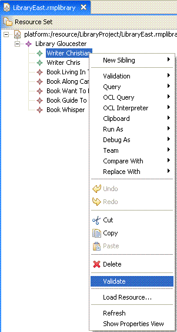

This example describes the usage of validation constraints within the SDK. It demonstrates how to contribute constraints in XML, written in OCL for the library meta-model.
Please refer to the document Eclipse Modeling Framework Technology Examples Overview for reviewing the library meta-model used as the basis for demonstrating the capabilities in this example.
This example plug-in is named org.eclipse.emf.validation.examples.ocl. This example
requires the Validation Adapter Example functionality and therfore should also be installed.
This plug-in does not contribute any menu items. It defines a live and a batch constraint in the plugin.xml file.
This plug-in uses the EValidator implementation defined in the plug-in org.eclipse.emf.validation.examples.adapter.
The funtionality is triggered by invoking the menu item Validate from the editor's context menu or main menu.
Please refer to the tutorial OCL Validation Tutorial for reviewing the code samples within this example.
Refer to this example if you need:
Copyright (c) 2000,2005 IBM Corporation and others. All Rights Reserved.